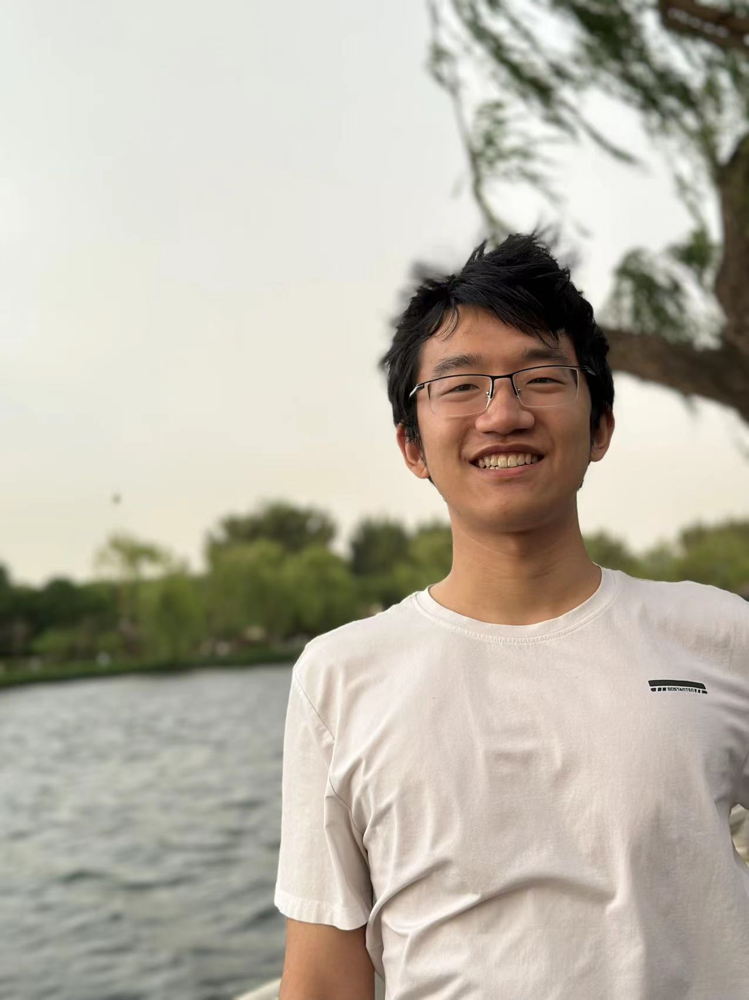

Skip to content
Skip to content

Facial Microscopic Structures Synthesis from a Single Unconstrained Image
A differentiable representation of facial wrinkles and pores that enables microscopic detail synthesis from naturally captured images.
Project pagePhD Student at MBZUAI
Offline Rendering · Neural-Aided Real-time Rendering
I am currently a PhD student at MBZUAI, under the supervision of Prof. Lingqi Yan.

A preview of recent work in appearance modeling and rendering. Hover or focus on an item to see more.
A differentiable representation of facial wrinkles and pores that enables microscopic detail synthesis from naturally captured images.
Project page
A diffusion-guided relighting method that produces stable material observations for highlight-free SVBRDF recovery.
Project pageSelected implementations and systems work beyond my research publications. Hover or focus on an item to see more.

A readable BDPT reference implementation with the minimal Nori extensions needed for light-image accumulation and the t=1 technique.
View repositoryWorking notes, derivations, and paper readings. The production blog keeps its existing LaTeX and bibliography pipeline.
A derivation-focused note on microsurfaces, normal distributions, masking, and the general microfacet model.
Reframing rendering as a sparse reconstruction problem rather than producing every pixel before compression.
From sparse signals and underdetermined systems to compressive measurements of light transport.
A quieter record beside the research.